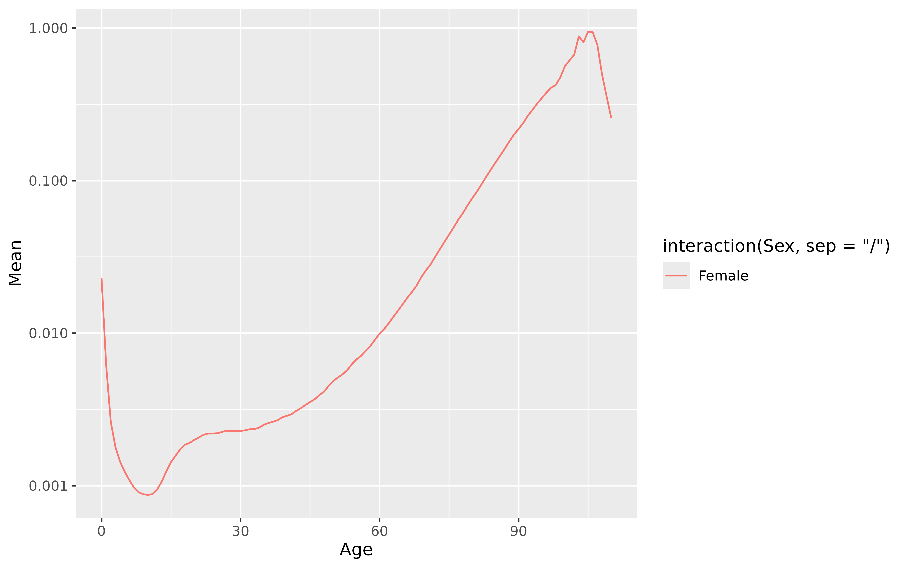

FMEAN() returns an iid functional model applied to the formula's response variable as a function of age.
Examples
fmean <- aus_mortality |>
dplyr::filter(State == "Victoria", Sex == "female") |>
model(mean = FMEAN(Mortality))
report(fmean)
#> Series: Mortality
#> Model: FMEAN
#>
#> # A tibble: 101 × 3
#> Age mean sigma
#> <int> <dbl> <dbl>
#> 1 0 0.0270 0.0263
#> 2 1 0.00444 0.00559
#> 3 2 0.00195 0.00219
#> 4 3 0.00129 0.00141
#> 5 4 0.00112 0.00118
#> 6 5 0.000931 0.00100
#> 7 6 0.000834 0.000870
#> 8 7 0.000753 0.000809
#> 9 8 0.000624 0.000681
#> 10 9 0.000581 0.000590
#> # ℹ 91 more rows
autoplot(fmean) + ggplot2::scale_y_log10()
